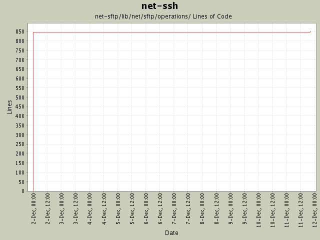

Summary Period: 2004-12-01 to 2004-12-11
[root]/net-sftp/lib/net/sftp/operations

Total Lines Of Code:
850 (2005-01-07 15:12)
| Author | Changes | Lines of Code | Lines per Change |
|---|---|---|---|
| minam | 20 (100.0%) | 856 (100.0%) | 42.8 |
Fixed some doc typos. Made the synchronous operations work in Ruby 1.8.1
(they no longer require a 'return' from within a proc).
11 lines of code changed in:
Initial revision
845 lines of code changed in:
Generated by StatCVS 0.2.3